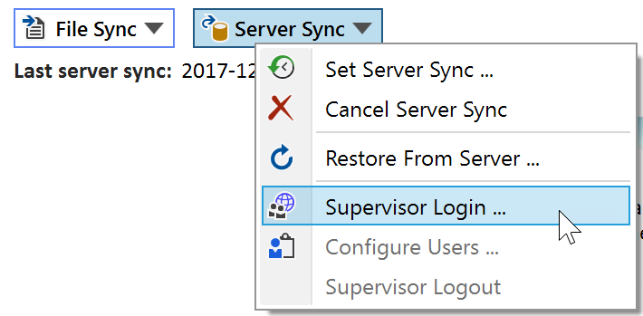
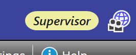

Supervisor
About Supervisors
The supervisor role is only required in the context of server access control (SAC) - it doesn't have any function outside this context. A supervisor has access to all finalized server experiments of his coworker groups, no matter what the SAC group sharing settings are. To do this, he can directly login from the Espresso ELN application using credentials provided by the server administrator (see next section). He also can specify the experiment sharing options of his team (see below). Please note that this task also can be delegated to the Espresso ELN database administrator, who has access to the settings of all supervisors.
Supervisor Prerequisites
A supervisor only can log in via the Espresso ELN application. Supervisors planning to only view experiments and to apply sharing settings therefore need to follow the steps outlines below. Supervisors already creating own experiments can skip this part.
- Install the Espresso ELN application on the supervisor's machine, if not already in place. The application infrastructure is required to view the desired content.
- After installation, create a unique ELN username for the supervisor. The resulting first experiment can remain empty and unfinalized.
- Finally, a server connection needs to be established, utilizing the server standard login parameters of all Espresso ELN users. Please note that the server synchronization interval is 10 minutes, so it may take a few moments before above changes become effective on the server.
Supervisor login occurs from the Server Sync dropdown of the Dashboard Section. The supervisor menu items are not visible if no SAC infrastructure is present on the server, or no user has been added so far to any supervisor group. - Click the Supervisor Login menu item:

A login dialog appears, where the supervisor credentials, as provided by the administrator, can be entered. After successful login, a supervisor label appears in the top right corner of the application:

Once logged in as supervisor, access to all finalized server experiments of the own user groups is granted, no matter what the group sharing settings are.
Also, the Configure Users menu item becomes active. Clicking it opens the SAC Tool, which allows to to specify the group sharing parameters. This is described in detail in the SAC Tool topic.
Finally, the Supervisor Logout menu item allows to log out as supervisor again, if required.